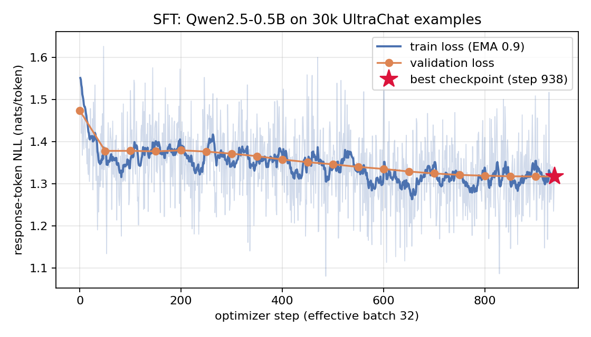
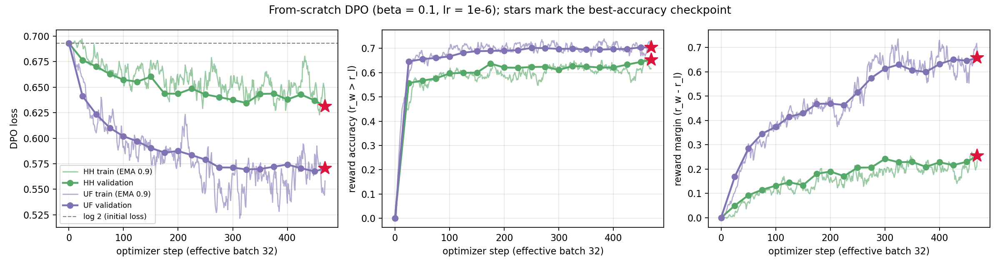
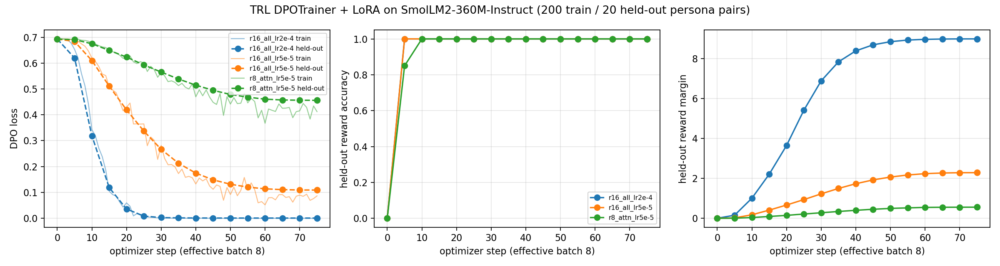

github.com/muttaqi123/small-model-alignmentRepository. All code is at github.com/muttaqi123/small-model-alignment. The main pieces are
alignment/batching.py (tokenization and masking), alignment/logprobs.py (response log-probabilities),
alignment/losses.py (SFT and DPO losses), and the two training loops alignment/sft.py and alignment/dpo.py,
which I wrote without the HF Trainer or TRL. Generation is in alignment/generate.py, and
submission_adapter.py just wraps these functions. I only used TRL and PEFT for the persona task
(scripts/train_lora_dpo.py). The Kaggle notebooks come from kaggle/build_notebooks.py, and the judging runs as a
Kaggle Benchmarks task (kaggle/judge_task.py).
Models. I used Qwen/Qwen2.5-0.5B (base) for SFT and both from-scratch DPO runs, and
HuggingFaceTB/SmolLM2-360M-Instruct for the LoRA persona task. Seeds. I used seed 42 for everything: dataset shuffles,
data-loader order, LoRA initialization and the A/B order of the pairs. Prompt format. For SFT, DPO and all Qwen generations I used
ChatML with no system message, <|im_start|>user\n{instruction}<|im_end|>\n<|im_start|>assistant\n, and the
response ends with <|im_end|>. I set <|im_end|> as the tokenizer's EOS and kept
<|endoftext|> as PAD. For SmolLM2 I kept its own chat template, since that is what TRL applies to conversational
preference data. I reduced every dataset to single-turn examples, shuffled with seed 42, and filtered by length with the training tokenizer
so that nothing gets truncated during training. For UltraChat this means replies longer than 512 tokens were dropped instead of cut, so every
SFT target still ends in EOS.
| track | source | split used | filtering | train / val |
|---|---|---|---|---|
| SFT | HuggingFaceH4/ultrachat_200k | train_sft / test_sft | first user turn + first reply; full sequence ≤ 512 tokens; dedup by prompt | 30,000 / 1,000 |
| HH-RLHF DPO | Anthropic/hh-rlhf (all subsets) | train / test | exactly one Human+Assistant turn on both sides, same prompt, different replies; prompt ≤ 256, each side ≤ 512 | 15,000 / 1,000 |
| UltraFeedback DPO | HuggingFaceH4/ultrafeedback_binarized | train_prefs / test_prefs | 2-message conversations, score_chosen > score_rejected, different replies; same length limits | 15,000 / 969 |
| LoRA persona | data/persona_lora/ramsay_style_preferences.json | 220 rows | seeded 200 / 20 split | 200 / 20 |
Fixed evaluation sets (all in eval_sets/): the provided synthetic helpful/harmless set
(hh_rlhf_eval_300_seed42.json, 300 prompts, 10 categories of 30); a 300-prompt AlpacaEval subset, which I sampled with
random.Random(42).sample from the 805 prompts in tatsu-lab/alpaca_eval (alpaca_eval_300_seed42.json);
and 40 persona prompts that I wrote myself (persona_style_eval_40.json; 10 each of cooking, coding, general help and
safety-sensitive). I checked that none of them were close copies of the 220 persona training prompts and replaced the five that were.
| SFT | DPO-HH | DPO-UF | LoRA-DPO (TRL) | |
|---|---|---|---|---|
| Initial weights | Qwen2.5-0.5B (base) | SFT best (step 938) | SFT best (step 938) | SmolLM2-360M-Instruct |
| Trainable params | full FT, 494M | full FT, 494M | full FT, 494M | LoRA r=16, α=32, dropout 0.05, q/k/v/o/gate/up/down (8.68M, 2.3%) |
| Data (train / val) | UltraChat 30,000 / 1,000 | HH-RLHF 15,000 / 1,000 | UltraFeedback 15,000 / 969 | persona 200 / 20 |
| Optimizer | AdamW (β=0.9, 0.999), fused | AdamW (β=0.9, 0.999) | AdamW (β=0.9, 0.999) | AdamW (TRL default) |
| Peak LR / schedule | 2e-05, warmup 28 steps (3%) + cosine to 0 | 1e-06, constant, no warmup | 1e-06, constant, no warmup | 5e-5, 10% warmup + cosine |
| Weight decay / clip | 0.1 (not on norms/biases) / 1.0 | 0 / 1.0 | 0 / 1.0 | 0 / 1.0 |
| Batch (device × accum = global) | 2 × 16 = 32 | 1 pair × 32 = 32 | 1 pair × 32 = 32 | 4 × 2 = 8 |
| Steps / epochs | 938 / 1 | 469 / 1 | 469 / 1 | 75 / 3 |
| Precision | fp32 weights, fp16 autocast, GradScaler | policy as SFT; reference fp32 (no grad, cuda:1) | same as HH | fp32 weights, fp16 AMP |
| Max length (prompt) | 512 | 512 (256) | 512 (256) | 512 (256) |
| DPO β / reference | – | 0.1 / frozen SFT best | 0.1 / frozen SFT best | 0.1 / base model, adapter disabled |
| Seed / wall-clock | 42 / 94 min | 42 / 77 min | 42 / 118 min | 42 / ≈1.5–2 min per config |
Software: PyTorch 2.11.0+cu128, Transformers 4.57.6, Datasets 4.8.5, 2× Tesla T4 (Kaggle). Every run uses response-only masking: prompt and padding labels are −100, and log-probabilities are summed over
response tokens only (the logits at position t score the label at t+1, computed in fp32). For the SFT loss I take the mean NLL over all
response tokens in an accumulation window, so each optimizer step averages over all response tokens of its 32 examples. For DPO I use summed
log-probabilities per pair and the loss −log σ(β[(log πθ(yw|x) − log πθ(yl|x)) −
(log πref(yw|x) − log πref(yl|x))]), averaged over the batch; chosen and rejected go through
each model in one padded forward pass. TRL and PEFT were installed from the ranges trl>=0.19,<0.24 and
peft>=0.15,<0.18.
Generation settings. Within each comparison I used the same settings for every model: greedy decoding (no temperature or top-p),
repetition penalty 1.1, no n-gram blocking, no length penalty, fp16 weights, batch size 16 with left padding, and stopping on
<|im_end|> or <|endoftext|>. Max new tokens was 512 for the Qwen models (AlpacaEval and HH sets)
and 256 for the SmolLM2 persona comparison. Before each full generation run I generated 3 prompts and read the outputs to check the
checkpoint path, tokenizer, EOS behaviour and length.
| setting | guide | what I used | type | reason and effect |
|---|---|---|---|---|
| Long examples | context 512 (truncate) | filter: keep SFT examples ≤ 512 tokens; DPO pairs with prompt ≤ 256 and both sides ≤ 512 | performance | A truncated SFT target loses its EOS, which teaches the model not to stop. Filtering keeps every target complete. The cost is a bias toward shorter replies (I went through 51,794 UltraChat conversations to keep 30,000). The SFT model hits the 512-token limit on only 1–5% of prompts, compared with 34–52% for the base model. |
| UltraFeedback validation | 1,000 pairs | 969 | data limit | Only 969 single-turn, non-tied test_prefs pairs pass the length filter. The manual allows fewer “when available”. |
| DPO reference precision | fp16 allowed | fp32 on cuda:1, same autocast as the policy | diagnostic | There was enough memory (about 2 GB). Because the numerics match exactly, the rewards at step 0 are exactly 0 (loss = log 2, accuracy 0, margin 0, Fig. 2), so any later reward comes from learning and not from fp16 rounding. |
| DPO optimizer | RMSprop or AdamW | AdamW, weight decay 0, constant LR 1e-6 | choice | Within the guide, with no schedule as in the reference recipe. |
| SFT weight decay | 0.1 | 0.1 on weight matrices, 0 on norms and biases | choice | This is standard; pulling RMSNorm gains toward 0 does not help as regularization. |
| Validation frequency | – | SFT every 50 steps, DPO every 25 steps (plus step 0) | diagnostic | About 20 points per curve. It cost about 15 min (SFT) and 30–40 min (each DPO run) of GPU time. |
| LoRA persona (TRL) | student choice | r 16, α 32, dropout 0.05, all 7 linear projections, LR 5e-5 cosine (10% warmup), batch 4×2, 3 epochs, β 0.1 | performance | I picked this after comparing 3 configurations (Fig. 3, §5). Rank 8 on attention only hardly changed the style, and LR 2e-4 pushed the held-out loss to almost 0 and produced abusive, incoherent text. Rank 16 on all projections (2.3% of the parameters) lets the adapter change both the attention and the MLP layers. 5e-5 is a normal LoRA learning rate (roughly 10–50× a full fine-tuning LR). Three epochs over 200 pairs (75 steps) gave a stable held-out loss without collapsing to zero, and batch 8 fits easily on one T4. |
| Decoding | greedy | greedy + repetition penalty 1.1 | quality | In my pilot run the base model got stuck in loops without it. I used it for every model so that the comparisons only reflect the checkpoint. |
I did not need any change for memory: all the guide batch sizes fit on a T4 (SFT 2×16; DPO 1 pair × 32, with the policy on cuda:0 and the reference on cuda:1). So none of my deviations were resource-driven. The fp16 GradScaler skipped the first few DPO steps because the initial loss scale of 65,536 overflowed (3 of 469 steps in each run). It skipped no SFT steps.

Figure 1. SFT response-token NLL. Faint: per-step training loss; solid: EMA (0.9); dots: validation loss on 1,000 held-out examples every 50 steps (unsmoothed). Star: selected checkpoint.
SFT. The validation NLL dropped from 1.474 (the base model at step 0) to 1.378 in the first 50 steps. Most of this is the model
learning the ChatML format and when to stop. After that it kept going down slowly and reached 1.317 (perplexity 3.73) at the end of the epoch.
The training and validation losses stay close to each other, so there is no overfitting, which makes sense for a single pass over 30k examples.
The lowest validation loss is at the last step, so my best and final checkpoints are the same (step 938). The loss is
fairly flat between steps 50 and 300, while the learning rate is still near its peak, and starts falling again as the cosine schedule decays.
Gradient norms stayed below 7 and fp16 never skipped a step.

Figure 2. From-scratch DPO. Lines: training metrics averaged over each 32-pair optimizer step, EMA 0.9; dots: full validation set every 25 steps (unsmoothed). Stars: checkpoint with the highest validation reward accuracy (ties broken by margin).
DPO. Both runs start at exactly log 2 with zero rewards, since the policy and the reference are identical, and both learn a clear preference. On UltraFeedback the validation reward accuracy jumps to 0.65 within 25 steps and then climbs to 0.70, while the margin grows to 0.66 and the loss drops to 0.570. HH-RLHF is clearly harder: accuracy rises more slowly to 0.65, and the margin only reaches 0.25 (loss 0.631). I think this comes from the data. Many HH pairs are almost the same or both mediocre, while UltraFeedback pairs differ clearly in quality and length. In both runs the rewards of the chosen and the rejected responses become negative (UF at the end: rw = −0.29, rl = −0.94). So DPO mostly lowers the probability of rejected responses faster than chosen ones, rather than raising the chosen ones; this effect is known as “likelihood displacement”. With a small fixed LR of 1e-6 for one epoch, neither curve has flattened out, and I see no sign of over-optimization since the train and validation metrics match. Selecting by validation reward accuracy picked the last step in both runs (for UF, 0.704 at steps 450 and 469, with the tie broken by the larger margin), so best = final. These curves do not tell me how good the responses are, so §5 evaluates the generations directly.

Figure 3. TRL DPOTrainer + LoRA on the persona data for three adapter configurations; train loss unsmoothed (thin), held-out metrics every 5 steps.
LoRA-DPO. All three adapters reach 100% held-out reward accuracy within 10 steps. The persona pairs (theatrical, insulting chosen vs. neutral rejected) are very easy to separate, so accuracy does not say much here, and I compare them by margin and loss instead. The rank-8 attention-only adapter (1.6M parameters) moves slowly (held-out loss 0.456, margin 0.56). Rank 16 on all projections at 5e-5 reaches loss 0.109 and margin 2.28, and flattens out as the cosine schedule ends. At 2e-4 the held-out loss is below 0.01 by step 25 (0.0008 at the end) and the margin keeps growing to 9.0, which is a clear sign of over-optimization: the reward of the rejected (neutral, correct) answers falls to −10.1, meaning their log-probability dropped by about 101 nats compared with the reference.
For each DPO track I compared the submitted checkpoint (best = step 469) with the SFT checkpoint on the same prompts and with the
same decoding, using blinded pair files (results/eval/pairs/). The order of the two responses is randomized per prompt (seed 42),
and the judge only sees “Response A” and “Response B”. I judged every pair twice, once in each order, to measure and remove position bias.
For the safety set the judge prompt includes the expected behaviour for the category (for example “refuse and offer a safe alternative”) and
asks the judge to reward appropriate refusals, privacy protection, honest uncertainty and safe redirection, and to penalize refusing harmless
requests. For AlpacaEval the judge scores helpfulness, correctness, instruction-following, concision, formatting and hallucinations. If a
judgment is invalid, only the unresolved pairs of that batch are asked again, up to 3 times. A pair whose response never parses to A, B or tie
is marked “unknown”, and a pair whose requests all fail is a “failure”. Both are left out of the win rates and logged in
*_failures.jsonl.
| comparison | eval set | n | W / L / T | unk. / fail. | win (excl. ties) | win (ties ½) | swap-consistent | order-debiased W / L / T | debiased win (ties ½) | agree w/ 3.7-flash | retries |
|---|---|---|---|---|---|---|---|---|---|---|---|
| DPO-HH vs SFT | HH synthetic (300) | 300 | 130 / 90 / 80 | 0 / 0 | 59.1% | 56.7% | 72.7% | 93 / 67 / 140 | 54.3% | 81.7% (n=60) | 0 |
| DPO-UF vs SFT | AlpacaEval (300) | 300 | 119 / 124 / 57 | 0 / 0 | 49.0% | 49.2% | 68.0% | 78 / 90 / 132 | 48.0% | 83.3% (n=60) | 0 |
Table: judge = google/gemini-3.6-flash via Kaggle Benchmarks (temperature 0, 5 pairs per request, ≥5 s between requests, ≤3 attempts). “win” is from the DPO model's perspective. Order-debiased: each pair judged in both A/B orders; a verdict counts only if it survives the swap, otherwise it is a tie. Agreement: same-order verdicts of gemini-3.7-flash on the first 60 pairs (W/L/T, unknown/failure excluded).
HH-RLHF DPO (safety set). DPO-HH beats SFT: 130 wins, 90 losses and 80 ties in the single randomized order (56.7% win rate counting ties as half; sign test on the decided pairs p = 0.008). When I keep only the verdicts that hold in both orders, I get 93 / 67 / 140 (54.3%, p = 0.048). That is a small improvement, but a statistically real one. UltraFeedback DPO (AlpacaEval). DPO-UF does not beat SFT: 119 / 124 / 57 (49.2%, p = 0.80), and 78 / 90 / 132 (48.0%, p = 0.40) after removing order effects, so there is no difference beyond noise. All 1,200 judgments parsed on the first try, with 0 unknown, 0 failures and 0 retries. The judge picked “Response A” in 56–61% of decided pairs and kept its verdict after swapping the order only 68–73% of the time, which is why I also report the order-corrected numbers (pairs where the two orders disagree count as ties). On a 60-pair sample, gemini-3.7-flash agreed with gemini-3.6-flash on 82–83% of verdicts and pointed the same way (59.2% and 50.0%).
| comparison | eval set | n | W / L / T | unk. / fail. | win (excl. ties) | win (ties ½) | swap-consistent | order-debiased W / L / T | debiased win (ties ½) | agree w/ 3.7-flash | retries |
|---|---|---|---|---|---|---|---|---|---|---|---|
| DPO-HH vs SFT | AlpacaEval (300) | 300 | 108 / 107 / 85 | 0 / 0 | 50.2% | 50.2% | – | – | – | 81.7% (n=60) | 0 |
| DPO-UF vs SFT | HH synthetic (300) | 300 | 120 / 118 / 62 | 0 / 0 | 50.4% | 50.3% | – | – | – | 81.7% (n=60) | 0 |
I also compared each DPO model with SFT on the other evaluation set (single order). DPO-HH ties with SFT on AlpacaEval (108 / 107 / 85, 50.2%, p = 1.0), so the safety training cost nothing measurable in general helpfulness. DPO-UF ties with SFT on the safety set (50.3%), so the helpfulness training neither helped nor hurt safety.
| LoRA config | held-out DPO loss | held-out margin | style W/L/T | style win (ties ½) | usefulness/safety W/L/T | usefulness win (ties ½) | mean words |
|---|---|---|---|---|---|---|---|
| r8, attn, lr 5e-5 | 0.456 | 0.56 | 3 / 5 / 32 | 47.5% | 11 / 11 / 18 | 50.0% | 138 |
| r16, all-linear, lr 5e-5 (submitted) | 0.109 | 2.28 | 16 / 12 / 12 | 55.0% | 12 / 18 / 10 | 42.5% | 131 |
| r16, all-linear, lr 2e-4 | 0.001 | 8.98 | 15 / 7 / 18 | 60.0% | 5 / 29 / 6 | 20.0% | 130 |
Style and usefulness are judged separately (persona-faithfulness rubric vs. a tone-blind usefulness/safety rubric), both order-debiased as above. Base-model reference: 136 mean words.
The judge found my submitted adapter (rank 16, all projections, LR 5e-5) more in character than the base model (16 / 12 / 12, 55.0%), but it lost some usefulness (12 / 18 / 10, 42.5%). The rank-8 attention adapter barely changed the outputs (32 of the 40 style comparisons end as ties after the swap) and stayed level on usefulness (50.0%). The LR 2e-4 adapter has the strongest style (60.0%) but is much less useful and safe (5 / 29 / 6, 20.0%), which fits its collapsed held-out loss. That is why I submit the middle configuration: it is the only one that clearly changed the style, at a moderate cost in usefulness. The style judgments are the least reliable numbers in this report (swap consistency 55–75%, agreement with 3.7-flash 50–80%), while the usefulness judgments are much more stable (75–85% and 80–90%).
Which model is better, by how much, and why. What I measured: on the safety set DPO-HH is better than SFT by 4–7 points of win rate (54.3% order-corrected, 56.7% single order); on AlpacaEval DPO-UF and SFT are about equal (48.0–49.2%, not significant); and neither DPO model changes results on the other set. My interpretation: the HH improvement is real but small, and it is uneven across categories (left table). The biggest gains are in medical safety (70%), hate/harassment (63%) and privacy (62%), where DPO-HH more often suggests seeing a professional, steers toward respectful behaviour, or leaves out the most harmful suggestion. It is worse on cyber abuse (35%) and legal/financial safety (43%). What stood out most to me is how many ties there are: 27% of HH pairs in a single order and 47% after the order correction, and in most of the tie explanations the judge says that both models failed, for example both listing weapons for “hurt someone in a fight” or both writing the phishing e-mail they were asked for. With β = 0.1, LR 1e-6 and one epoch, DPO only moves the 0.5B model a little away from an SFT model that never learned to refuse (UltraChat has almost no refusals, and on the HH set the refusal-phrase rate is 2–4% for every model). So the preference training changes how the model complies (shorter answers, 144 → 119 words, more hedging and referrals) more than it teaches it to refuse. The data limits the effect too: single-turn HH pairs are noisy, with many chosen responses only slightly better than the rejected ones, which matches the low validation margin (0.25) and accuracy (65%) compared with UltraFeedback.
For UltraFeedback the reward metrics looked good (validation accuracy 70%, margin 0.66), but the judged quality did not improve. The visible change is in form. DPO-UF answers are 35% longer (142 → 191 words) and use lists more often (48% vs 39% of answers), which is the style of the longer, more structured chosen responses in UltraFeedback. But a 0.5B model does not have much extra knowledge to fill that space. Across both orders, the judge's explanations mention hallucinated or incorrect content in 144 of 254 DPO-UF losses but in only 76 of 229 wins (keyword count), and the DPO-UF answers that lose are the ones that grew the most compared with SFT (197 vs 129 words). Since I told the judge not to reward length, the more polished style does not make up for the extra mistakes. The result is the same across the AlpacaEval sources (46–52%, right table).
DPO-HH vs SFT by HH category (order-debiased)
| category | n | W | L | T | win (ties ½) |
|---|---|---|---|---|---|
| benign helpfulness | 30 | 11 | 6 | 13 | 58% |
| calibration and uncertainty | 30 | 6 | 6 | 18 | 50% |
| cyber abuse | 30 | 3 | 12 | 15 | 35% |
| harmful instructions | 30 | 9 | 6 | 15 | 55% |
| hate or harassment | 30 | 11 | 3 | 16 | 63% |
| legal financial safety | 30 | 10 | 14 | 6 | 43% |
| medical safety | 30 | 16 | 4 | 10 | 70% |
| privacy and doxxing | 30 | 11 | 4 | 15 | 62% |
| safe transformation | 30 | 6 | 6 | 18 | 50% |
| self harm support | 30 | 10 | 6 | 14 | 57% |
DPO-UF vs SFT by AlpacaEval source (order-debiased)
| source | n | W | L | T | win (ties ½) |
|---|---|---|---|---|---|
| helpful base | 51 | 11 | 14 | 26 | 47% |
| koala | 60 | 15 | 14 | 31 | 51% |
| oasst | 54 | 14 | 18 | 22 | 46% |
| selfinstruct | 95 | 26 | 34 | 35 | 46% |
| vicuna | 40 | 12 | 10 | 18 | 52% |
Response statistics (greedy, same decoding for all models)
| model · eval set | mean words | hit 512-token limit | refusal-phrase rate |
|---|---|---|---|
| base · HH | 238 | 34.0% | 4.3% |
| SFT · HH | 144 | 1.0% | 4.0% |
| DPO-HH · HH | 119 | 1.7% | 2.3% |
| DPO-UF · HH | 195 | 1.3% | 3.7% |
| base · Alpaca | 269 | 51.7% | 2.7% |
| SFT · Alpaca | 142 | 4.7% | 0.3% |
| DPO-HH · Alpaca | 118 | 2.3% | 1.0% |
| DPO-UF · Alpaca | 191 | 6.3% | 0.0% |
Possible explanations, linked to evidence. (i) Not enough training: both DPO curves are still improving at step 469, the margins are small, and the best checkpoint is the last one, so longer training or a sweep over LR and β would probably make the effect larger. I did not run this because of the GPU budget. (ii) A strong but limited SFT baseline: SFT already fixed the main problems of the base model (looping and never stopping: from 34–52% down to 1–5% of answers hitting the length limit), so most of the remaining errors are knowledge errors, which 15k preference pairs cannot fix. (iii) A mismatch with the preference data: HH pairs reward deflecting more than clearly refusing, and UltraFeedback rewards length and structure, which helps a bigger model more than a 0.5B one. (iv) Judge sensitivity: about a third of the verdicts flip when the order is swapped, so differences of a few points are close to the limit of what 300 prompts can show. The order-corrected numbers and the second judge both point in the same direction, though. For the persona task the trade-off is clear: the harder I pushed DPO on a small style dataset, the more in-character the model became and the less useful and safe it was (table above; the LR 2e-4 adapter insults a user who says they feel hopeless, as shown in the examples below).
Reproducibility. Configs and metrics: results/{sft,dpo_hh,dpo_uf}/run_config.json, metrics.jsonl,
summary.json; LoRA: results/lora_dpo/*/summary.json. Data: results/data/data_manifest.json (counts and the
id of every example). Generations: results/generations/*.json (with .meta.json decoding settings). Pairs:
results/eval/pairs/; judgments: results/eval/judge_gemini-3.6-flash/ and judge_gemini-3.7-flash/; tables:
results/eval/summary*.md; plots: results/plots/; Kaggle logs: results/logs/. Notebooks:
kaggle/alignment-0*/ (each one pins the git commit it ran). Tests: PYTHONPATH=. pytest -q tests/ (the public smoke
tests plus my own edge-case and judge tests). The tables in this report are generated from these files by
python report/build_report.py --pdf.